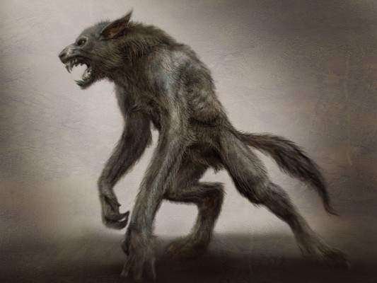

El hombre lobo, también conocido como licántropo o lobisón, es una criatura legendaria presente en muchas culturas independientes a lo largo del mundo. Se ha dicho que este es el más universal de todos los mitos (probablemente junto con el del vampiro), y aún hoy, mucha gente cree en la existencia de los hombres lobo o de otras clases de «hombres bestia». Todas las características típicas de aquel animal —como son la ferocidad, la fuerza, la astucia y la rapidez— son en ellos claramente manifiestas, para desgracia de todos aquellos que se cruzan en su camino. Según las creencias populares, el hombre lobo puede permanecer con su aspecto animal únicamente por espacio de unas cuantas horas, generalmente cuando sale la luna llena.
En el folclore y la mitología, un hombre lobo es una persona que se transforma en lobo, ya sea a propósito o involuntariamente, a causa de una maldición o de otro agente exterior.

Orígenes y apariencia del hombre lobo
Conocido comúnmente como hombre lobo, es un humano con la capacidad de cambiar de forma a un lobo.
La causa de este fenómeno es debido a una maldición o a una aflicción y las transformaciones ocurren en las noches de luna llena.
Los hombres lobo son descritos de diferentes formas, la transformación puede ser permanente o temporal, provocada por la luna llena, una maldición, la mordedura de otro hombre lobo o de nacimiento. La transformación puede ocurrir de forma aleatoria o controlada por el hombre lobo.
En su forma humana, el hombre lobo podía tener rasgos físicos reveladores como la unión de ambas cejas en el puente de la nariz, uñas curvas, orejas bajas y un paso oscilante.
Un método para identificar a un hombre lobo en su forma humana era cortar la carne y se vería pelo debajo de la piel dentro de la herida.
En su forma animal, el hombre lobo varía de una cultura a otra, aunque lo más descrito es la similitud con un lobo común pero sin cola, con un tamaño mayor y con ojos y voz humanos.
Historia de los «hombres lobo» o licántropos
El origen del hombre lobo se remonta a la mitología protoindoeuropea, donde la licantropía se reconstruye como un aspecto de la iniciación de la clase guerrera según el paganismo germánico en la Edad del Hierro de Europa.
En el siglo II a.C., el geógrafo griego Pausanias relató la historia del rey Licaón de Arcadia, que se transformó en lobo porque había sacrificado a un niño en el altar de Zeus.
En la versión del mito contada por Ovidio en las Metamorfosis, cuando Zeus visita a Licaón disfrazado de hombre común, Licaón quiere probar si realmente es un dios, Licaón mata a un rehén molosoide y le sirve sus entrañas a Zeus, este, disgustado, convierte a Licaón en un lobo.
Pausanias también cuenta la historia de un hombre arcadio llamado Damarco de Parrasia, que se convirtió en lobo después de probar las entrañas de un niño humano sacrificado a Zeus.
Fue restaurado a su forma humana 10 años después y se convirtió en campeón olímpico.
Según Pausanias, si los hombres lobo se abstienen de probar la carne humana mientras están convertidos, serán restaurados a su forma humana nueve años después, si no es así, vivirán como lobos para siempre.
Plinio el Viejo citando a Euanthes, menciona que, en Arcadia, una vez al año, un hombre era elegido por sorteo del clan Anthus.
El hombre elegido fue escoltado a un pantano de la zona donde colgó su ropa en un roble, nadó a través del pantano y se transformó en un lobo, uniéndose a una manada durante nueve años.
El hombre se abstuvo de probar la carne humana y regresó al mismo pantano, cruzó de regreso y recuperó su forma humana con nueve años añadidos a su apariencia.
Virgilio, en su obra poética Églogas, escribió sobre un hombre llamado Moreis, que usó hierbas y venenos recogidos en Ponto para convertirse en lobo.
En el Satiricón escrito por Gayo Petronio Árbitro, uno de los personajes, Niceros, cuenta una historia en un banquete sobre un amigo que se convirtió en lobo.
Agustín de Hipona escribe que debido a ciertos hechizos de brujas los hombres pueden convertirse en lobos.
Características
En algunos países y culturas otros animales desempeñan el papel del hombre lobo. Así, en África aún se cree en hombres hiena u hombres leopardo; en India se pensaba que los tigres enemigos de los hombres eran capaces de convertirse en humanos para atraer a estos. Abundan hasta hoy en Latinoamérica las leyendas de los «hombres-tigres», asociados con yaguaretés, jaguares, otorongos o pumas ya que éstas son las fieras más temidas en ese continente. Los dos mitos más importantes son: el runa uturuncu, «indio-tigre» u «hombre-puma» en el quichua del noroeste argentino; el Yaguareté-Abá o «tigre-capiango» de las leyendas guaraníticas del Paraguay.45 Estas leyendas aparecen también en la obra póstuma del poeta Leopoldo Lugones.6 Sin embargo, desde cierto punto de vista no sería apropiado llamar a todos los seres citados anteriormente licántropos ya que, como se puede ver en su etimología, la palabra licántropo designa a un hombre lobo.
El mito de los hombres lobo parece (o es) originario de Europa, y estaba muy vinculado con otras supersticiones y la magia negra. El mito es esencialmente masculino y, entre las causas de que un ser humano se convirtiera en hombre lobo, las más frecuentes eran las siguientes:
- Ingerir ciertas plantas vinculadas tradicionalmente con los lobos y la magia negra.
- Beber en el mismo lugar donde lo hubiera hecho un lobo.
- Cubrirse con la piel de un lobo.
- Dormir desnudo a la luz de la luna llena.
- Usar una prenda hecha de piel de lobo.
- Adquirir la capacidad de transformarse en lobo mediante magia y sortilegios.
- Ser el séptimo hijo varón de una familia y no ser bautizado (ver lobizón).
- Ser mordido por otro hombre lobo
- Nacer después de morochos (mellizos) o gemelos siendo hijo varón.
Teorías de su origen
Se ha propuesto una teoría reciente para explicar los episodios de hombres lobo en Europa durante los siglos XVIII y XIX. El cornezuelo, cuya ingestión causa envenenamiento, es un hongo que crece en los lugares donde se cultiva centeno en temporadas húmedas, después de inviernos muy fríos. El envenenamiento por cornezuelo normalmente afecta pueblos completos o por lo menos las áreas pobres de los pueblos, provocando alucinaciones, histeria colectiva y paranoia, así como convulsiones y en algunas ocasiones la muerte (el LSD deriva del cornezuelo). El envenenamiento por consumo de cornezuelo se ha propuesto como la causa de que algunos individuos creyeran ser hombres lobo, o de que todo un pueblo creyera haber visto a un hombre lobo.
Como la mayoría de los intentos de usar la ciencia moderna para explicar creencias religiosas y folclore, esta teoría es controvertida e insatisfactoria. Por ejemplo, no explica por qué los brotes de histeria sobre brujería y las leyendas de transformaciones en animales existen en todo el mundo, incluyendo lugares donde no hay cornezuelo del centeno. La histeria y la superstición han existido por todo el mundo durante toda la historia registrada, y, generalmente hablando, el envenenamiento por consumo de hongos no es la razón de todos estos acontecimientos.
Similarmente, algunos investigadores modernos han intentado utilizar condiciones tales como rabia, hipertricosis (crecimiento excesivo del pelo sobre el cuerpo entero) o porfiria (un desorden enzimático con síntomas que incluyen alucinaciones y paranoia) como explicación para la creencia del hombre lobo, aunque los síntomas de esas dolencias no emparejan completamente con el folclore o la evidencia de los episodios de histeria colectiva.
También existe un raro desorden mental llamado licantropía clínica, en el que la persona afectada tiene la ilusoria creencia de que se está transformando en un animal, aunque no siempre es un lobo o un hombre lobo.
Otros creen que las leyendas del hombre lobo nacieron como parte del chamanismo y sus tótems, animales sagrados que supuestamente protegen a la tribu en las culturas primitivas con sus creencias basadas en la naturaleza. El término «teriantropía» ha sido adoptado para describir un concepto espiritual en el que el individuo cree tener el espíritu o alma, en su totalidad o en parte, de un animal no-humano.
Una idea explorada en el Libro de los hombres lobo de Sabine Baring-Gould es que las leyendas de los hombres lobo se pueden haber usado también para explicar los asesinatos en serie. Tal vez el ejemplo más famoso sea el de Peter Stumpp (ejecutado en 1599), un campesino alemán acusado de asesinato en serie y canibalismo, también conocido como el hombre lobo de Bedburg.